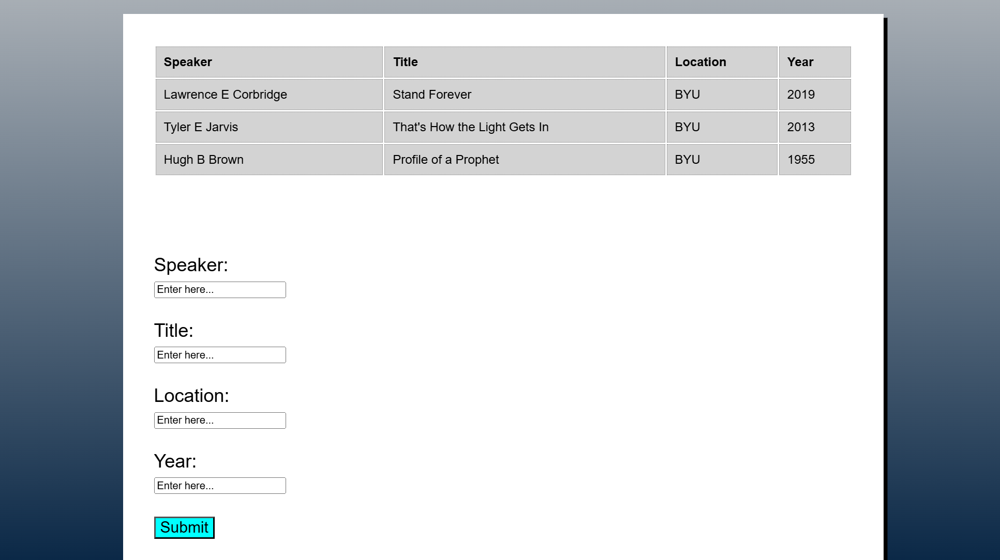
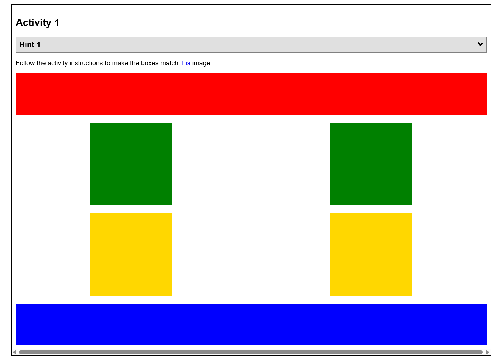
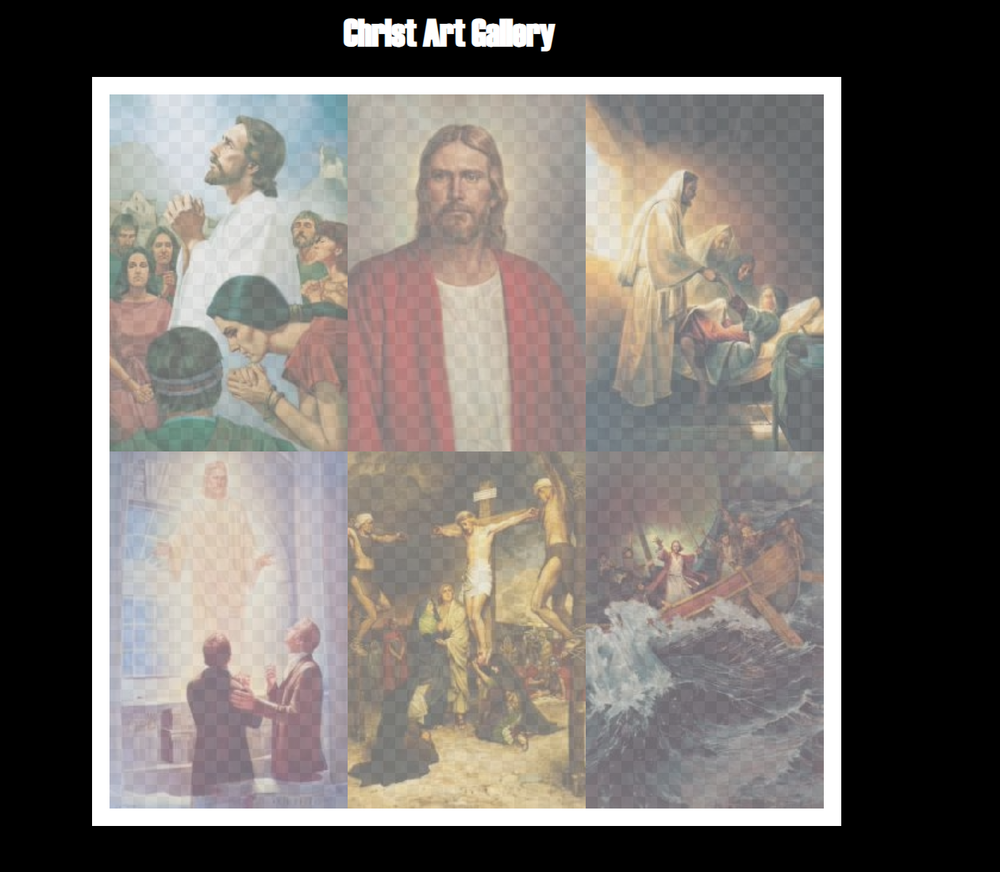
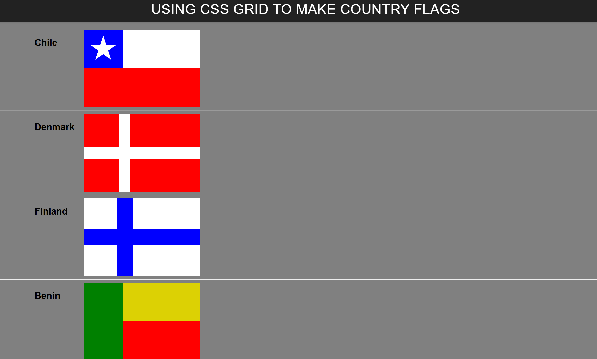
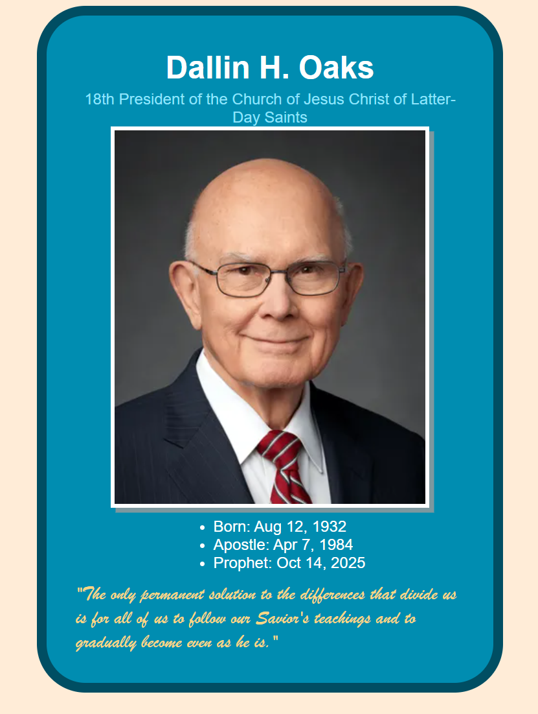
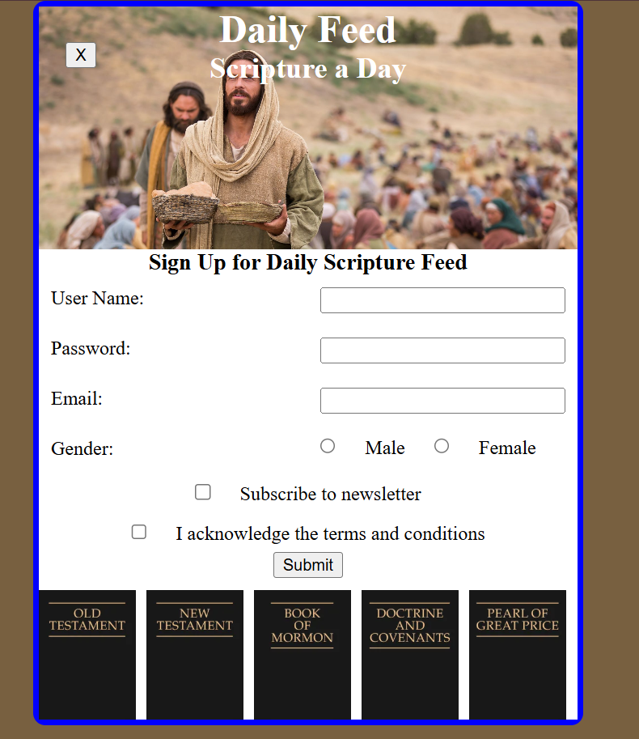
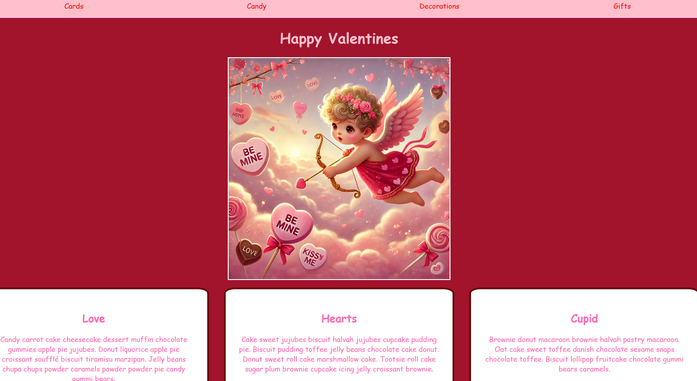

Apostle Spotlight
In the Apostle Spotlight Design Challenge, I made a nice page of all the Apostles and set it on a nice background. This taught me about how to separate grid elements from each other and how to create multiple sections on a page.
Click here to see it yourself!
Favorite Devo
In the Favorite Devo Challenge, I listed some of my favorite devotionals in a table and then added a form so that the user can also submit theirs! I learned how to use forms and tables during this assigment.
Click here to see it yourself!
Positioning
In the Positioning challenge, I used a grid and other elements in html and css to move cubes into their desired locations, and learned how to use grids and the float property to my advantage.
Click here to see it yourself!
Gallery
In the gallery project, I took some pictures and scaled them down so they would take up less room, and then I made samll thumbnails of them to further the decrease in size. This tuaght me how to reduce the file size of images and properties so they can load faster.
Click here to see it yourself!
Grid Flags
In the Grid Flags Project, I took several flags from different countries and made them using html and css. I learned how to use the grid property of css extensively during this project.
Click here to see it yourself!
Prophet Card
In the Prophet Card challenge, I created a 'card' for President Oaks using html and css together. During this assignment I leanred how to combine html and css to make a graphic that looks nice!
Click here to see it yourself!
Signup
In the signup activity, I created a form that allows you to sign up and receive daily scriptures to your email. This assignment taught me about how to create and submit forms, especially forms that look nice and function well.
Click here to see it yourself!
Valentines
In the valentines activity, I was challenged to design an alright-looking webpage using only the html provided and css. I learned how to use css to make a boring and bland html file look decent and well-made.
Click here to see it yourself!